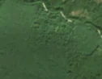
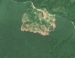

12,0 ha de pădure schimbată lângă Verendin
Între vara lui 2025 și 25 aprilie 2026, pe aproximativ 12,0 ha de pădure din comuna Mehadica, lângă Verendin, județul Caraș-Severin, imaginile Sentinel-2 arată că vegetația a dispărut sau s-a schimbat puternic. În registrul public există o autorizație de tăiere pentru acest loc.
Autorizația de tăiere
cu autorizație
Parcela autorizată acoperă zona, iar autorizația era valabilă când s-a tăiat.
Ce se vede în poze: În poza detaliată și în «înainte», zona marcată era acoperită de pădure deasă. În «după», pădurea din jur e tot verde, dar în zona marcată apar pete late de pământ gol și drumuri de scos lemnul, deci copacii au fost tăiați. Există și o autorizație de exploatare valabilă pentru acest loc.


Înainte și după: Copernicus Sentinel-2, 10 m pe pixel, conturul zonei cu portocaliu. Poza detaliată (Esri World Imagery) e de acum 1–4 ani: arată ce era acolo înainte, nu tăierea.
Pe scurt
- Identificator
- 20260425_45129_22176
- Locul
- Verendin, comuna Mehadica, județul Caraș-Severin (SIRUTA 53327)
- Coordonate (centru)
- 45.12898, 22.17613 · Google Maps · OpenStreetMap
- Suprafața
- 12,0 ha (din pixeli de 10 m; ± câțiva pixeli pe margine)
- Pădurea întreagă
- în vara lui 2025 (de atunci, nori sau iarnă)
- Prima imagine cu schimbarea
- 25 aprilie 2026
- Imagini în care se vede schimbarea
- 9
- Cât de sigur e semnalul din satelit
- medie
- Autorizația cea mai apropiată
- APV 2500157700860 · Ocolul Silvic Mehadia, valabilă 20 ianuarie 2026 – 31 octombrie 2026, la 0 m de zonă
- Terenul
- pădure de stat, după amenajamentul silvic publicat
- Pădure pierdută în jur, alți ani
- 2004, 2006, 2007, 2016, 2017 (Hansen)
- Garda Forestieră
- Timișoara
Dacă vrei să verifici sau să sesizezi
- Pădurile din județul Caraș-Severin sunt în grija Gărzii Forestiere Timișoara, care controlează tăierile și dă amenzile.
- Autorizația găsită în zonă e emisă de Ocolul Silvic Mehadia.
- Formularul Gărzii Forestiere Naționale primește sesizări și fără nume. Trimite linkul acestei pagini, coordonatele și pozele. Dacă tăierea e în desfășurare, sună la 112.
- Autorizațiile și transporturile de lemn se pot căuta în Inspectorul Pădurii.
Pagina arată ce se vede din satelit și ce scrie în registrul public; nu e o dovadă în sine.
Cum citezi zona
Linkul acestei pagini nu se schimbă. Dacă zona iese vreodată de pe hartă, pagina rămâne, cu data și cu ce știam despre ea.
Pădurea RO, zona 20260425_45129_22176: 12,0 ha, Verendin, comuna Mehadica, județul Caraș-Severin; schimbare văzută din satelit între vara lui 2025 și 25 aprilie 2026. https://iliemihai.github.io/padurea-ro/zona/20260425_45129_22176/ (consultat la [data]). Date: CC BY 4.0.
Datele zonei: GeoJSON · toate zonele: date deschise · licența CC BY 4.0.
Istoricul zonei pe hartă
Starea se poate schimba când registrul publică o autorizație sau când analistul vede poze mai bune. O ținem aici, ca un link citat să arate și ce spuneam atunci.
Pe hartă cel târziu din 5 noiembrie 2026.
- 5 noiembrie 2026 – azi · cu autorizație
Detalii tehnice, pentru verificare
De ce acest nivel de încredere:
- văzută schimbată în 9 imagini diferite
- peste 3 ha
- ultima dată am văzut-o intactă în vara lui 2025 (de atunci, nori sau zăpadă)
- AI-ul vede pădure dispărută
Ce a văzut analistul cu context: Poza detaliată din 2024 arată coroane dese pe aproape toată suprafața (coronament 2000: 87%, WorldCover 100% copaci). În Sentinel-2 «după» (iunie 2026, vară, deci nu e efect de sezon) apar sol dezgolit roz-bej, margine sudică foarte netă și insule verzi rămase în interior; pădurea din jur rămâne verde, iar petecul nu continuă ca fâșie în afara conturului, deci nu e șantier. Autorizația APV 2500157700860 (Ocolul Silvic Mehadia, 80% suprapunere, valabilă din 2026-01-20) indică exploatare acoperită legal, iar drumul forestier de la 8 m explică accesul.
- Placa Sentinel-2
- 34TER
- NDVI de referință
- 0.9
- NBR de referință
- 0.69
- Scăderea în pădurea din jur
- 0.06
- Persistență
- 0.99
- NDVI / NBR după
- 0.501 / 0.255
- Analistul de zi (model)
- taiere · 0.9 · claude-haiku-5-5
- Analistul cu context (model)
- taiere_rasa · 0.8
Cum se calculează fiecare: metodologia.
Pune harta zonei într-un articol
Copiază codul în articol (merge în majoritatea site-urilor de știri). Sau pune doar linkul: WhatsApp, Facebook și X arată singure poza zonei.